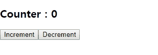

<!DOCTYPE html>
<html>
<head><meta name="generator" content="Hexo 3.8.0">
    <meta charset="utf-8">

    

    
    <title>React Typescript 프로젝트에 MobX 적용 | unknownerror</title>
    
    <meta name="viewport" content="width=device-width, initial-scale=1, maximum-scale=1">
    
        <meta name="keywords" content="React,Mobx">
    
    <meta name="description" content="React Typescript 프로젝트에 MobX 적용 목표 : Typescript로 구성된 React 프로젝트에 MobX를 적용하고 Store 기반의 라우터 사용   환경 123Windows 10Node.js 8.11.2CRA 2.1.1  MobX란?  MobX는 Redux와 함께 가장 인기있는 상태관리 라이브러리 중 하나입니다.  공식홈페이지에서는 Mo">
<meta name="keywords" content="React,Mobx">
<meta property="og:type" content="article">
<meta property="og:title" content="React Typescript 프로젝트에 MobX 적용">
<meta property="og:url" content="https://devtory.github.io/2018/11/13/React Typescript 프로젝트에 MobX 적용/index.html">
<meta property="og:site_name" content="unknownerror">
<meta property="og:description" content="React Typescript 프로젝트에 MobX 적용 목표 : Typescript로 구성된 React 프로젝트에 MobX를 적용하고 Store 기반의 라우터 사용   환경 123Windows 10Node.js 8.11.2CRA 2.1.1  MobX란?  MobX는 Redux와 함께 가장 인기있는 상태관리 라이브러리 중 하나입니다.  공식홈페이지에서는 Mo">
<meta property="og:locale" content="ko">
<meta property="og:image" content="https://devtory.github.io/2018/11/13/React%20Typescript%20프로젝트에%20MobX%20적용/result.gif">
<meta property="og:updated_time" content="2018-11-17T13:04:36.384Z">
<meta name="twitter:card" content="summary">
<meta name="twitter:title" content="React Typescript 프로젝트에 MobX 적용">
<meta name="twitter:description" content="React Typescript 프로젝트에 MobX 적용 목표 : Typescript로 구성된 React 프로젝트에 MobX를 적용하고 Store 기반의 라우터 사용   환경 123Windows 10Node.js 8.11.2CRA 2.1.1  MobX란?  MobX는 Redux와 함께 가장 인기있는 상태관리 라이브러리 중 하나입니다.  공식홈페이지에서는 Mo">
<meta name="twitter:image" content="https://devtory.github.io/2018/11/13/React%20Typescript%20프로젝트에%20MobX%20적용/result.gif">
    

    
        <link rel="alternate" href="/" title="unknownerror" type="application/atom+xml">
    

    

    <link rel="stylesheet" href="/libs/font-awesome/css/font-awesome.min.css">
    <link rel="stylesheet" href="/libs/titillium-web/styles.css">
    <link rel="stylesheet" href="/libs/source-code-pro/styles.css">

    <link rel="stylesheet" href="/css/style.css">

    <script src="/libs/jquery/3.3.1/jquery.min.js"></script>
    
    
        <link rel="stylesheet" href="/libs/lightgallery/css/lightgallery.min.css">
    
    
        <link rel="stylesheet" href="/libs/justified-gallery/justifiedGallery.min.css">
    
    
    


</head>
</html>
<body>
    <div id="wrap">
        <header id="header">
    <div id="header-outer" class="outer">
        <div class="container">
            <div class="container-inner">
                <div id="header-title">
                    <h1 class="logo-wrap">
                        <a href="/" class="logo"></a>
                    </h1>
                    
                        <h2 class="subtitle-wrap">
                            <p class="subtitle">Summary</p>
                        </h2>
                    
                </div>
                <div id="header-inner" class="nav-container">
                    <a id="main-nav-toggle" class="nav-icon fa fa-bars"></a>
                    <div class="nav-container-inner">
                        <ul id="main-nav">
                            
                                <li class="main-nav-list-item">
                                    <a class="main-nav-list-link" href="/">홈</a>
                                </li>
                            
                                        <ul class="main-nav-list"><li class="main-nav-list-item"><a class="main-nav-list-link" href="/categories/Frontend/">Frontend</a><ul class="main-nav-list-child"><li class="main-nav-list-item"><a class="main-nav-list-link" href="/categories/Frontend/React/">React</a></li></ul></li><li class="main-nav-list-item"><a class="main-nav-list-link" href="/categories/Mobile/">Mobile</a><ul class="main-nav-list-child"><li class="main-nav-list-item"><a class="main-nav-list-link" href="/categories/Mobile/ReactNative/">ReactNative</a></li></ul></li></ul>
                                    
                                <li class="main-nav-list-item">
                                    <a class="main-nav-list-link" href="/about/index.html">About</a>
                                </li>
                            
                        </ul>
                        <nav id="sub-nav">
                            <div id="search-form-wrap">

    <form class="search-form">
        <input type="text" class="ins-search-input search-form-input" placeholder="검색">
        <button type="submit" class="search-form-submit"></button>
    </form>
    <div class="ins-search">
    <div class="ins-search-mask"></div>
    <div class="ins-search-container">
        <div class="ins-input-wrapper">
            <input type="text" class="ins-search-input" placeholder="Type something...">
            <span class="ins-close ins-selectable"><i class="fa fa-times-circle"></i></span>
        </div>
        <div class="ins-section-wrapper">
            <div class="ins-section-container"></div>
        </div>
    </div>
</div>
<script>
(function (window) {
    var INSIGHT_CONFIG = {
        TRANSLATION: {
            POSTS: '포스트',
            PAGES: 'Pages',
            CATEGORIES: '카테고리',
            TAGS: '태그',
            UNTITLED: '(Untitled)',
        },
        ROOT_URL: '/',
        CONTENT_URL: '/content.json',
    };
    window.INSIGHT_CONFIG = INSIGHT_CONFIG;
})(window);
</script>
<script src="/js/insight.js"></script>

</div>
                        </nav>
                    </div>
                </div>
            </div>
        </div>
    </div>
</header>
        <div class="container">
            <div class="main-body container-inner">
                <div class="main-body-inner">
                    <section id="main">
                        <div class="main-body-header">
    <h1 class="header">
    
    <a class="page-title-link" href="/categories/Frontend/">Frontend</a><i class="icon fa fa-angle-right"></i><a class="page-title-link" href="/categories/Frontend/React/">React</a>
    </h1>
</div>

                        <div class="main-body-content">
                            <article id="post-React Typescript 프로젝트에 MobX 적용" class="article article-single article-type-post" itemscope="" itemprop="blogPost">
    <div class="article-inner">
        
            <header class="article-header">
                
    
        <h1 class="article-title" itemprop="name">
        React Typescript 프로젝트에 MobX 적용
        </h1>
    

            </header>
        
        
            <div class="article-meta">
                
    <div class="article-date">
        <a href="/2018/11/13/React Typescript 프로젝트에 MobX 적용/" class="article-date">
            <time datetime="2018-11-13T06:06:19.000Z" itemprop="datePublished">2018-11-13</time>
        </a>
    </div>

		

                
    <div class="article-tag">
        <i class="fa fa-tag"></i>
        <a class="tag-link" href="/tags/Mobx/">Mobx</a>, <a class="tag-link" href="/tags/React/">React</a>
    </div>

            </div>
        
        
        <div class="article-entry" itemprop="articleBody">
            <h2 id="React-Typescript-프로젝트에-MobX-적용"><a href="#React-Typescript-프로젝트에-MobX-적용" class="headerlink" title="React Typescript 프로젝트에 MobX 적용"></a>React Typescript 프로젝트에 MobX 적용</h2><blockquote>
<p>목표 : Typescript로 구성된 React 프로젝트에 MobX를 적용하고 Store 기반의 라우터 사용</p>
</blockquote>
<ul>
<li><p>환경</p>
<figure class="highlight plain"><table><tr><td class="gutter"><pre><span class="line">1</span><br><span class="line">2</span><br><span class="line">3</span><br></pre></td><td class="code"><pre><span class="line">Windows 10</span><br><span class="line">Node.js 8.11.2</span><br><span class="line">CRA 2.1.1</span><br></pre></td></tr></table></figure>
</li>
<li><p>MobX란?</p>
<ul>
<li><p>MobX는 Redux와 함께 가장 인기있는 상태관리 라이브러리 중 하나입니다.</p>
</li>
<li><p>공식홈페이지에서는 Mobx를 매우 단순하고 확장성이 좋다고 소개 하고 있습니다. Redux와 비교해 볼때 충분히 동의할만한 내용입니다.</p>
</li>
<li><p>또한 Mobx는 React가 상태를 저장하고 업데이트 하는 방식과 유사한 메커니즘을 제공하기 때문에  React와의 조합이 매우 강력하다고 합니다.</p>
</li>
<li><p>Mobx에 대한 자세한 내용은 공식문서가 잘 정리 되어 있어 공식문서를 추천드립니다. </p>
</li>
</ul>
</li>
</ul>
<blockquote>
<p>먼저, 프로젝트를 생성 후 Mobx를 적용해 보도록 하겠습니다.</p>
</blockquote>
<ul>
<li><p>crea-react-app으로 Typescript 프로젝트 생성하기</p>
<figure class="highlight shell"><table><tr><td class="gutter"><pre><span class="line">1</span><br><span class="line">2</span><br></pre></td><td class="code"><pre><span class="line"><span class="meta">$</span> npm install -g create-react-app</span><br><span class="line"><span class="meta">$</span> create-react-app &lt;프로젝트명&gt; --scripts-version=react-scripts-ts</span><br></pre></td></tr></table></figure>
</li>
<li><p>mobx, react-router 설치</p>
<figure class="highlight shell"><table><tr><td class="gutter"><pre><span class="line">1</span><br><span class="line">2</span><br></pre></td><td class="code"><pre><span class="line"><span class="meta">$</span> cd &lt;프로젝트명&gt;</span><br><span class="line"><span class="meta">$</span> yarn add mobx mobx-react</span><br></pre></td></tr></table></figure>
<ul>
<li>mobx패키지는 타입정의파일(d.ts)이 내장되어있어 별도 설치가 필요 없습니다.</li>
</ul>
</li>
<li><p>데코레이터를 사용하기 위해 tsconfig.json 파일에 아래내용 추가</p>
<figure class="highlight"><table><tr><td class="gutter"><pre><span class="line">1</span><br><span class="line">2</span><br><span class="line">3</span><br><span class="line">4</span><br><span class="line">5</span><br><span class="line">6</span><br><span class="line">7</span><br></pre></td><td class="code"><pre><span class="line">&#123;</span><br><span class="line">	<span class="attr">"compilerOptions"</span>: &#123;</span><br><span class="line">		...,</span><br><span class="line">		"experimentalDecorators": true</span><br><span class="line">	&#125;,</span><br><span class="line">	...</span><br><span class="line">&#125;</span><br></pre></td></tr></table></figure>
</li>
<li><p>(선택사항) tslint.json에 귀찮은 옵션을 해제 합니다</p>
<ul>
<li>“ordered-imports”는 모듈 import시 A, B, C 순으로 호출하지 않을 경우 경고를 발생시켜 줍니다. 이 옵션은 아래 내용을 추가하여 해제 하겠습니다.</li>
</ul>
<figure class="highlight"><table><tr><td class="gutter"><pre><span class="line">1</span><br><span class="line">2</span><br><span class="line">3</span><br><span class="line">4</span><br><span class="line">5</span><br><span class="line">6</span><br><span class="line">7</span><br></pre></td><td class="code"><pre><span class="line">&#123;</span><br><span class="line">  ...</span><br><span class="line">	"rules": &#123;</span><br><span class="line">    	"ordered-imports": false</span><br><span class="line">  	&#125;</span><br><span class="line">  ...</span><br><span class="line">&#125;</span><br></pre></td></tr></table></figure>
</li>
<li><p>디렉토리 구조</p>
<ul>
<li>디렉토리 구조에 대한 대한 표준은 없습니다.</li>
<li>여러가지 유형 중 저는 아래와 같은 구조를 선호 합니다.</li>
</ul>
<figure class="highlight plain"><table><tr><td class="gutter"><pre><span class="line">1</span><br><span class="line">2</span><br><span class="line">3</span><br><span class="line">4</span><br><span class="line">5</span><br><span class="line">6</span><br><span class="line">7</span><br></pre></td><td class="code"><pre><span class="line">+-- src</span><br><span class="line">   +-- stores        ※ 여러개의 store 생성 가능</span><br><span class="line">   +-- constant      ※ props로 전달되는 store 객체의 Key값으로 사용될 상수</span><br><span class="line">   +-- view</span><br><span class="line">       +-- containers   ※ store가 주입(inject)되는 컴포넌트</span><br><span class="line">       +-- components   ※ props를 통해 container로부터  store데이터를 전달받음</span><br><span class="line">                          (권장사항으로 component에서 직접 store를 주입해도 상관없습니다)</span><br></pre></td></tr></table></figure>
</li>
</ul>
<blockquote>
<p>단순한 카운터를 예를 들어 스토어와 아래 컴포넌트를 생성해 보겠습니다.</p>
</blockquote>
<ul>
<li><p>Store 생성</p>
<ul>
<li><p>src/stores/CounterStore.ts 파일 생성 후 아래 내용을 입력 합니다.</p>
<figure class="highlight typescript"><table><tr><td class="gutter"><pre><span class="line">1</span><br><span class="line">2</span><br><span class="line">3</span><br><span class="line">4</span><br><span class="line">5</span><br><span class="line">6</span><br><span class="line">7</span><br><span class="line">8</span><br><span class="line">9</span><br><span class="line">10</span><br><span class="line">11</span><br><span class="line">12</span><br><span class="line">13</span><br><span class="line">14</span><br><span class="line">15</span><br><span class="line">16</span><br><span class="line">17</span><br><span class="line">18</span><br></pre></td><td class="code"><pre><span class="line"><span class="keyword">import</span> &#123; observable, action &#125; <span class="keyword">from</span> <span class="string">'mobx'</span>;</span><br><span class="line"></span><br><span class="line"><span class="keyword">export</span> <span class="keyword">class</span> CounterStore &#123;</span><br><span class="line">    <span class="meta">@observable</span> <span class="keyword">public</span> counter: <span class="built_in">number</span>;</span><br><span class="line">    <span class="keyword">constructor</span>(<span class="params"></span>) &#123;</span><br><span class="line">        <span class="keyword">this</span>.counter = <span class="number">0</span>;</span><br><span class="line">    &#125;</span><br><span class="line">    </span><br><span class="line">    <span class="meta">@action</span></span><br><span class="line">    <span class="keyword">public</span> increment = <span class="function"><span class="params">()</span> =&gt;</span> &#123;</span><br><span class="line">        <span class="keyword">this</span>.counter++;</span><br><span class="line">    &#125;</span><br><span class="line">    </span><br><span class="line">    <span class="meta">@action</span></span><br><span class="line">    <span class="keyword">public</span> decrement = <span class="function"><span class="params">()</span> =&gt;</span> &#123;</span><br><span class="line">        <span class="keyword">this</span>.counter--;</span><br><span class="line">    &#125;</span><br><span class="line">&#125;</span><br></pre></td></tr></table></figure>
<ul>
<li><p>데코레이터 설명</p>
<ul>
<li><p>@observable : observer로 관찰 가능해짐, 즉 값이 변경되면 observer에게 알림.</p>
</li>
<li><p>@action : @observable값을 변경 시키는 경우 사용</p>
</li>
</ul>
</li>
</ul>
</li>
<li><p>Store를 구분하기 위한 키(상수) 등록</p>
<ul>
<li><p>src/constant/stores.const.ts파일 생성후 아래 내용을 입력합니다.</p>
</li>
<li><p>언제나 그렇듯 정해진 형식은 없으니 나름의 기준을 정해 이름을 정하시면 됩니다.</p>
<figure class="highlight typescript"><table><tr><td class="gutter"><pre><span class="line">1</span><br></pre></td><td class="code"><pre><span class="line"><span class="keyword">export</span> <span class="keyword">const</span> COUNTER_STORE = <span class="string">'counter_store'</span>;</span><br></pre></td></tr></table></figure>
</li>
</ul>
</li>
<li><p>Store를 생성하기 위한 함수를 만듭니다</p>
<ul>
<li><p>src/stores/createStores.ts파일 생성후 아래 내용을 입력 합니다.</p>
</li>
<li><p>이후 추가되는 Store는 모두 이곳에 작성을 합니다.</p>
<figure class="highlight typescript"><table><tr><td class="gutter"><pre><span class="line">1</span><br><span class="line">2</span><br><span class="line">3</span><br><span class="line">4</span><br><span class="line">5</span><br><span class="line">6</span><br><span class="line">7</span><br><span class="line">8</span><br><span class="line">9</span><br><span class="line">10</span><br></pre></td><td class="code"><pre><span class="line"><span class="keyword">import</span> &#123; CounterStore &#125; <span class="keyword">from</span> <span class="string">'./CounterStore'</span>;</span><br><span class="line"><span class="keyword">import</span> &#123; COUNTER_STORE &#125; <span class="keyword">from</span> <span class="string">'src/constant/stores.const'</span>;</span><br><span class="line"></span><br><span class="line"><span class="keyword">export</span> <span class="function"><span class="keyword">function</span> <span class="title">createStores</span>(<span class="params"></span>) </span>&#123;</span><br><span class="line">    <span class="keyword">const</span> counterStore = <span class="keyword">new</span> CounterStore(); <span class="comment">// CounterStore 객체 생성</span></span><br><span class="line">    </span><br><span class="line">    <span class="keyword">return</span> &#123;</span><br><span class="line">        [COUNTER_STORE]: counterStore,</span><br><span class="line">    &#125;;</span><br><span class="line">&#125;</span><br></pre></td></tr></table></figure>
</li>
</ul>
</li>
<li><p>Store 등록</p>
<ul>
<li><p>src/index.tsx파일을 아래와 같이 수정합니다.</p>
<figure class="highlight typescript"><table><tr><td class="gutter"><pre><span class="line">1</span><br><span class="line">2</span><br><span class="line">3</span><br><span class="line">4</span><br><span class="line">5</span><br><span class="line">6</span><br><span class="line">7</span><br><span class="line">8</span><br><span class="line">9</span><br><span class="line">10</span><br><span class="line">11</span><br><span class="line">12</span><br><span class="line">13</span><br><span class="line">14</span><br><span class="line">15</span><br></pre></td><td class="code"><pre><span class="line">...</span><br><span class="line"></span><br><span class="line"><span class="keyword">import</span> &#123; Provider &#125; <span class="keyword">from</span> <span class="string">'mobx-react'</span>;</span><br><span class="line"><span class="keyword">import</span> &#123; createStores &#125; <span class="keyword">from</span> <span class="string">'src/stores/createStores'</span>;</span><br><span class="line"></span><br><span class="line"><span class="keyword">const</span> stores = createStores();</span><br><span class="line"></span><br><span class="line">ReactDOM.render(</span><br><span class="line">  &lt;Provider &#123;...stores&#125;&gt;</span><br><span class="line">    &lt;App /&gt;</span><br><span class="line">  &lt;<span class="regexp">/Provider&gt;,</span></span><br><span class="line"><span class="regexp">  document.getElementById('root') as HTMLElement</span></span><br><span class="line"><span class="regexp">);</span></span><br><span class="line"><span class="regexp"></span></span><br><span class="line"><span class="regexp">...</span></span><br></pre></td></tr></table></figure>
</li>
</ul>
</li>
</ul>
</li>
</ul>
<blockquote>
<p>이제 스토어를 사용하면 됩니다.</p>
</blockquote>
<ul>
<li><p>컴포넌트 만들기</p>
<ul>
<li><p>src/view/containers/Counter/index.tsx 파일을 생성합니다.</p>
</li>
<li><p>예제 이므로 components 폴더는 사용하지 않습니다.</p>
<figure class="highlight typescript"><table><tr><td class="gutter"><pre><span class="line">1</span><br><span class="line">2</span><br><span class="line">3</span><br><span class="line">4</span><br><span class="line">5</span><br><span class="line">6</span><br><span class="line">7</span><br><span class="line">8</span><br><span class="line">9</span><br><span class="line">10</span><br><span class="line">11</span><br><span class="line">12</span><br><span class="line">13</span><br><span class="line">14</span><br><span class="line">15</span><br><span class="line">16</span><br><span class="line">17</span><br><span class="line">18</span><br><span class="line">19</span><br><span class="line">20</span><br><span class="line">21</span><br><span class="line">22</span><br><span class="line">23</span><br><span class="line">24</span><br></pre></td><td class="code"><pre><span class="line"><span class="keyword">import</span> * <span class="keyword">as</span> React <span class="keyword">from</span> <span class="string">'react'</span>;</span><br><span class="line"><span class="keyword">import</span> &#123; observer, inject &#125; <span class="keyword">from</span> <span class="string">'mobx-react'</span>;</span><br><span class="line"></span><br><span class="line"><span class="keyword">import</span> &#123; CounterStore &#125; <span class="keyword">from</span> <span class="string">'src/stores/CounterStore'</span>;</span><br><span class="line"><span class="keyword">import</span> &#123; COUNTER_STORE &#125; <span class="keyword">from</span> <span class="string">'src/constant/stores.const'</span>;</span><br><span class="line"></span><br><span class="line"><span class="meta">@inject</span>(</span><br><span class="line">  COUNTER_STORE</span><br><span class="line">)</span><br><span class="line"><span class="meta">@observer</span></span><br><span class="line"><span class="keyword">class</span> Counter <span class="keyword">extends</span> React.Component&lt;&#123;&#125;, &#123;&#125;&gt; &#123;</span><br><span class="line">  <span class="keyword">public</span> render() &#123;</span><br><span class="line">    <span class="keyword">const</span> &#123; counter, increment, decrement &#125; = (<span class="keyword">this</span>.props[COUNTER_STORE] <span class="keyword">as</span> CounterStore);</span><br><span class="line">    <span class="keyword">return</span> (</span><br><span class="line">      &lt;div&gt;</span><br><span class="line">        &lt;h2&gt;Counter : &#123;counter&#125;&lt;<span class="regexp">/h2&gt;</span></span><br><span class="line"><span class="regexp">        &lt;button onClick=&#123;increment&#125;&gt;Increment&lt;/</span>button&gt;</span><br><span class="line">        &lt;button onClick=&#123;decrement&#125;&gt;Decrement&lt;<span class="regexp">/button&gt;</span></span><br><span class="line"><span class="regexp">      &lt;/</span>div&gt;</span><br><span class="line">    );</span><br><span class="line">  &#125;</span><br><span class="line">&#125;</span><br><span class="line"></span><br><span class="line"><span class="keyword">export</span> <span class="keyword">default</span> Counter;</span><br></pre></td></tr></table></figure>
<ul>
<li><p>데코</p>
<ul>
<li><p>@inject : 컴포넌트의 props에 스토어 주입</p>
</li>
<li><p>@observer: 스토어의 변화를 관찰하여 업데이트시 결과 반영</p>
</li>
</ul>
</li>
</ul>
</li>
</ul>
</li>
</ul>
<ul>
<li><p>참고</p>
<ul>
<li><a href="https://github.com/mobxjs/mobx" target="_blank" rel="noopener">mobx 공식 저장소</a></li>
</ul>
</li>
<li><p>결과</p>
</li>
</ul>
<!--  -->
<p></p>

        </div>
        <footer class="article-footer">
            


    <a data-url="https://devtory.github.io/2018/11/13/React Typescript 프로젝트에 MobX 적용/" data-id="cjos56grk0000zsvojvwotz98" class="article-share-link"><i class="fa fa-share"></i>공유하기</a>
<script>
    (function ($) {
        $('body').on('click', function() {
            $('.article-share-box.on').removeClass('on');
        }).on('click', '.article-share-link', function(e) {
            e.stopPropagation();

            var $this = $(this),
                url = $this.attr('data-url'),
                encodedUrl = encodeURIComponent(url),
                id = 'article-share-box-' + $this.attr('data-id'),
                offset = $this.offset(),
                box;

            if ($('#' + id).length) {
                box = $('#' + id);

                if (box.hasClass('on')){
                    box.removeClass('on');
                    return;
                }
            } else {
                var html = [
                    '<div id="' + id + '" class="article-share-box">',
                        '<input class="article-share-input" value="' + url + '">',
                        '<div class="article-share-links">',
                            '<a href="https://twitter.com/intent/tweet?url=' + encodedUrl + '" class="article-share-twitter" target="_blank" title="Twitter"></a>',
                            '<a href="https://www.facebook.com/sharer.php?u=' + encodedUrl + '" class="article-share-facebook" target="_blank" title="Facebook"></a>',
                            '<a href="http://pinterest.com/pin/create/button/?url=' + encodedUrl + '" class="article-share-pinterest" target="_blank" title="Pinterest"></a>',
                            '<a href="https://plus.google.com/share?url=' + encodedUrl + '" class="article-share-google" target="_blank" title="Google+"></a>',
                        '</div>',
                    '</div>'
                ].join('');

              box = $(html);

              $('body').append(box);
            }

            $('.article-share-box.on').hide();

            box.css({
                top: offset.top + 25,
                left: offset.left
            }).addClass('on');

        }).on('click', '.article-share-box', function (e) {
            e.stopPropagation();
        }).on('click', '.article-share-box-input', function () {
            $(this).select();
        }).on('click', '.article-share-box-link', function (e) {
            e.preventDefault();
            e.stopPropagation();

            window.open(this.href, 'article-share-box-window-' + Date.now(), 'width=500,height=450');
        });
    })(jQuery);
</script>

        </footer>
    </div>
</article>

    <section id="comments">
    
        
    <div id="disqus_thread">
        <noscript>Please enable JavaScript to view the <a href="//disqus.com/?ref_noscript">comments powered by Disqus.</a></noscript>
    </div>

    
    </section>


                        </div>
                    </section>
                    <aside id="sidebar">
    <a class="sidebar-toggle" title="Expand Sidebar"><i class="toggle icon"></i></a>
    <!-- <div class="sidebar-top">
        <p>팔로우:</p>
        <ul class="social-links">
            
                
                <li>
                    <a class="social-tooltip" title="twitter" href="/" target="_blank" rel="noopener">
                        <i class="icon fa fa-twitter"></i>
                    </a>
                </li>
                
            
                
                <li>
                    <a class="social-tooltip" title="facebook" href="/" target="_blank" rel="noopener">
                        <i class="icon fa fa-facebook"></i>
                    </a>
                </li>
                
            
                
                <li>
                    <a class="social-tooltip" title="google-plus" href="/" target="_blank" rel="noopener">
                        <i class="icon fa fa-google-plus"></i>
                    </a>
                </li>
                
            
                
                <li>
                    <a class="social-tooltip" title="github" href="/" target="_blank" rel="noopener">
                        <i class="icon fa fa-github"></i>
                    </a>
                </li>
                
            
                
                <li>
                    <a class="social-tooltip" title="weibo" href="/" target="_blank" rel="noopener">
                        <i class="icon fa fa-weibo"></i>
                    </a>
                </li>
                
            
                
                <li>
                    <a class="social-tooltip" title="rss" href="/" target="_blank" rel="noopener">
                        <i class="icon fa fa-rss"></i>
                    </a>
                </li>
                
            
        </ul>
    </div> -->
    
        
<nav id="article-nav">
    
    
        <a href="/2018/11/11/ReactNative(Expo)에 Typescript 적용/" id="article-nav-older" class="article-nav-link-wrap">
        <strong class="article-nav-caption">오래된</strong>
        <p class="article-nav-title">ReactNative(Expo)에 Typescript 적용</p>
        <i class="icon fa fa-chevron-left" id="icon-chevron-left"></i>
        </a>
    
</nav>

    
    <div class="widgets-container">
        
            
                

            
                
    <div class="widget-wrap widget-list">
        <h3 class="widget-title">카테고리</h3>
        <div class="widget">
            <ul class="category-list"><li class="category-list-item"><a class="category-list-link" href="/categories/Frontend/">Frontend</a><span class="category-list-count">1</span><ul class="category-list-child"><li class="category-list-item"><a class="category-list-link" href="/categories/Frontend/React/">React</a><span class="category-list-count">1</span></li></ul></li><li class="category-list-item"><a class="category-list-link" href="/categories/Mobile/">Mobile</a><span class="category-list-count">1</span><ul class="category-list-child"><li class="category-list-item"><a class="category-list-link" href="/categories/Mobile/ReactNative/">ReactNative</a><span class="category-list-count">1</span></li></ul></li></ul>
        </div>
    </div>


            
                
    <div class="widget-wrap widget-list">
        <h3 class="widget-title">태그</h3>
        <div class="widget">
            <ul class="tag-list"><li class="tag-list-item"><a class="tag-list-link" href="/tags/Expo/">Expo</a><span class="tag-list-count">1</span></li><li class="tag-list-item"><a class="tag-list-link" href="/tags/Mobx/">Mobx</a><span class="tag-list-count">1</span></li><li class="tag-list-item"><a class="tag-list-link" href="/tags/React/">React</a><span class="tag-list-count">1</span></li><li class="tag-list-item"><a class="tag-list-link" href="/tags/ReactNative/">ReactNative</a><span class="tag-list-count">1</span></li><li class="tag-list-item"><a class="tag-list-link" href="/tags/Typescript/">Typescript</a><span class="tag-list-count">1</span></li></ul>
        </div>
    </div>


            
        
    </div>
</aside>

                </div>
            </div>
        </div>
        <footer id="footer">
    <div class="container">
        <div class="container-inner">
            <a id="back-to-top" href="javascript:;"><i class="icon fa fa-angle-up"></i></a>
            <div class="credit">
                <h1 class="logo-wrap">
                    <a href="/" class="logo"></a>
                </h1>
                <p>&copy; 2018 celtonrd8</p>
                <p>Powered by <a href="//hexo.io/" target="_blank">Hexo</a>. Theme by <a href="//github.com/ppoffice" target="_blank">PPOffice</a></p>
            </div>
            <div class="footer-plugins">
              
    


            </div>
        </div>
    </div>
</footer>

        
    
    <script>
    var disqus_shortname = 'unknownerror';
    
    
    var disqus_url = 'https://devtory.github.io/2018/11/13/React Typescript 프로젝트에 MobX 적용/';
    
    (function() {
    var dsq = document.createElement('script');
    dsq.type = 'text/javascript';
    dsq.async = true;
    dsq.src = '//' + disqus_shortname + '.disqus.com/embed.js';
    (document.getElementsByTagName('head')[0] || document.getElementsByTagName('body')[0]).appendChild(dsq);
    })();
    </script>


    
        <script src="/libs/lightgallery/js/lightgallery.min.js"></script>
        <script src="/libs/lightgallery/js/lg-thumbnail.min.js"></script>
        <script src="/libs/lightgallery/js/lg-pager.min.js"></script>
        <script src="/libs/lightgallery/js/lg-autoplay.min.js"></script>
        <script src="/libs/lightgallery/js/lg-fullscreen.min.js"></script>
        <script src="/libs/lightgallery/js/lg-zoom.min.js"></script>
        <script src="/libs/lightgallery/js/lg-hash.min.js"></script>
        <script src="/libs/lightgallery/js/lg-share.min.js"></script>
        <script src="/libs/lightgallery/js/lg-video.min.js"></script>
    
    
        <script src="/libs/justified-gallery/jquery.justifiedGallery.min.js"></script>
    
    


<!-- Custom Scripts -->
<script src="/js/main.js"></script>

    </div>
</body>
</html>
